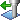
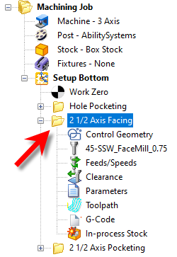
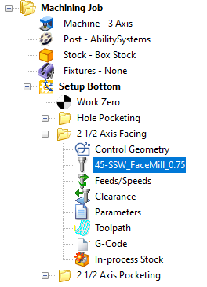
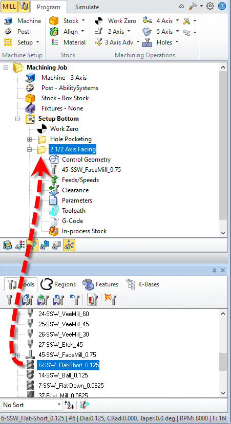
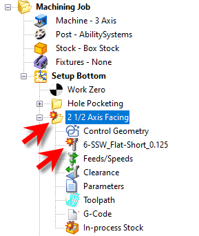
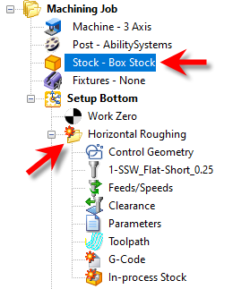
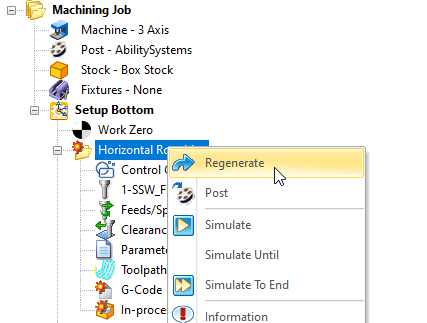
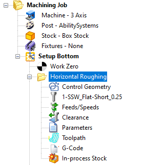

Machining Operations can be edited by using the Machining Browser. Each machining operation is represented as a folder in the browser. In the expanded state of this folder icon, seven icons representing different objects that make up the operation are displayed. The first five can be associatively edited.
The following icons are displayed under a machining operation's folder and represent the different objects that make up the operation. The first five (Machining Features, Tool, Feeds/Speeds, Clearance Geometry, Parameters, Toolpath Viewer/Editor and G-Code Editor) can be associatively edited. Machining Features Tool Feeds/Speeds Clearance Geometry Parameters Toolpath G-Code Editor In-process Stock |
Double clicking on the operation folder (or name) will open the operation's properties dialog with all tabs displayed for editing.  Double Click to Open the G-Code Editor module |
Right mouse click or double clicking a specific icon, for example the Tool icon would bring up the Tool Creation dialog, upon which you can substitute the current tool with another or edit the parameters of the current tool.
 Right or Double Click one of an Operation's Icons to Edit its Properties |
The tool can also be edited by dragging and dropping a tool from Tools tab to the Machining Browser.  Drag & Drop a Tool from the Object Browser to an Operation |
If any of the objects that make up the operation were to be edited after the toolpath was initially generated, the operation will be flagged dirty (i.e., needing regeneration). This condition is indicated by adding a red marker to the operation folder. Also, the object that necessitated this condition is also displayed with a red marker. An example of this is shown below. In this case the tool used in the operation was edited after the machining operation was created and so is shown differently, as is the operation.  Display of Operations that need Regenerating after Editing Mops will be flagged if any associated parameters outside of the operation are edited. For example, if the Stock is modified, any Roughing operations dependent on that Stock will be flagged for regeneration.  Note: MILL Module shown, Similar for TURN and Profile-NEST |
In order to regenerate the operation that is flagged with a red marker, you would have to select the operation, right click and select Regenerate.  Right-click on an Operation and Select Regenerate The toolpath is now generated with the modified settings.  Machining Operation is Regenerated |